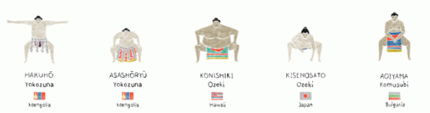

by brian phillips • illustration by jun chen a journey through oblivion.
When he comes into the ring, Hakuho, the greatest sumotori in the world, perhaps the greatest in the history of the world, dances like a tropical bird, like a bird of paradise. Flanked by two attendants — his tachimochi, who carries his sword, and his tsuyuharai, or dew sweeper, who keeps the way clear for him — and wearing his embroidered apron, the kesho-mawashi, with its braided cords and intricate loops of rope, Hakuho climbs onto the trapezoidal block of clay, two feet high and nearly 22 feet across, where he will be fighting. Here, marked off by rice-straw bales, is the circle, the dohyo, which he has been trained to imagine as the top of a skyscraper: One step over the line and he is dead. A Shinto priest purified the dohyo before the tournament; above, a six-ton canopy suspended from the arena's ceiling, a kind of floating temple roof, marks it as a sacred space. Colored tassels hang from the canopy's corners, representing the Four Divine Beasts of the Chinese[footnote]Japanese mythology, like many aspects of early Japanese culture, was heavily influenced by China.[/footnote] constellations: the azure dragon of the east, the vermilion sparrow of the south, the white tiger of the west, the black tortoise of the north. Over the canopy, off-center and lit with spotlights, flies the white-and-red flag of Japan.
Hakuho bends into a deep squat. He claps twice, then rubs his hands together. He turns his palms slowly upward. He is bare-chested, 6-foot-4 and 350 pounds. His hair is pulled up in a topknot. His smooth stomach strains against the coiled belt at his waist, the literal referent of his rank: yokozuna, horizontal rope. Rising, he lifts his right arm diagonally, palm down to show he is unarmed. He repeats the gesture with his left. He lifts his right leg high into the air, tipping his torso to the left like a watering can, then slams his foot onto the clay. When it strikes, the crowd of 13,000 souls inside the Ryogoku Kokugikan, Japan's national sumo stadium, shouts in unison: "Yoisho!" — Come on! Do it! He slams down his other foot: "Yoisho!" It's as if the force of his weight is striking the crowd in the stomach. Then he squats again, arms held out winglike at his sides, and bends forward at the waist until his back is near parallel with the floor. Imagine someone playing airplane with a small child. With weird, sliding thrusts of his feet, he inches forward, gliding across the ring's sand, raising and lowering his head in a way that's vaguely serpentine while slowly straightening his back. By the time he's upright again, the crowd is roaring.
In 265 years, 69 men have been promoted to yokozuna. Just 69 since George Washington was a teenager.[footnote]There are two additional yokozuna who supposedly practiced before 1749, but it's only with the ascension that year of Maruyama Gondazaemon, the third holder of the title, that we reach a point where we can be pretty sure about names and dates and whether people actually existed outside folklore, etc.[/footnote] Only the holders of sumo's highest rank are allowed to make entrances like this. Officially, the purpose of the elaborate dohyo-iri is to chase away demons. (And this is something you should register about sumo, a sport with TV contracts and millions in revenue and fan blogs and athletes in yogurt commercials — that it's simultaneously a sport in which demon-frightening can be something's official purpose.) But the ceremony is territorial on a human level, too. It's a message delivered to adversaries, a way of saying This ring is mine, a way of saying Be prepared for what happens if you're crazy enough to enter it.
Hakuho is not Hakuho's real name. Sumo wrestlers fight under ring names called shikona, formal pseudonyms governed, like everything else in sumo, by elaborate traditions and rules. Hakuho was born Mönkhbatyn Davaajargal in Ulaanbaatar, Mongolia, in 1985; he is the fourth non-Japanese wrestler to attain yokozuna status. Until the last 30 years or so, foreigners were rare in the upper ranks of sumo in Japan. But some countries have their own sumo customs, brought over by immigrants, and some others have sports that are very like sumo. Thomas Edison filmed sumo matches in Hawaii as early as 1903. Mongolian wrestling involves many of the same skills and concepts. In recent years, wrestlers brought up in places like these have found their way to Japan in greater numbers, and have largely supplanted Japanese wrestlers at the top of the rankings. Six of the past eight yokozuna promotions have gone to foreigners. There has been no active Japanese yokozuna since the last retired in 2003. This is a source of intense anxiety to many in the tradition-minded world of sumo in Japan.
As a child, the story goes, Davaajargal was skinny. This was years before he became Hakuho, when he used to mope around Ulaanbaatar, thumbing through sumo magazines and fantasizing about growing as big as a house. His father had been a dominant force in Mongolian wrestling in the 1960s and '70s, winning a silver medal at the 1968 Olympics and rising to the rank of undefeatable giant. It was sumo that captured Davaajargal's imagination, but he was simply too small for it.
When he went to Tokyo, in October 2000, he was a 137-pound 15-year-old. No trainer would touch him. Sumo apprentices start young, moving into training stables called heya where they're given room and board in return for a somewhat horrifying life of eating, chores, training, eating, and serving as quasi-slaves to their senior stablemates (and eating). Everyone agreed that little Davaajargal had a stellar wrestling brain, but he was starting too late, and his reedlike body would make real wrestlers want to kick dohyo sand in his face. Finally, an expat Mongolian rikishi (another word for sumo wrestler) persuaded the master of the Miyagino heya to take Davaajargal in on the last day of the teenager's stay in Japan. The stablemaster's gamble paid off. After a few years of training and a fortuitous late growth spurt, Davaajargal emerged as the most feared young rikishi in Japan. He was given the name Hakuho, which means "white Peng"; a Peng is a giant bird in Chinese mythology.
Hakuho's early career was marked by a sometimes bad-tempered rivalry with an older wrestler, a fellow Mongolian called Asashoryu ("morning blue dragon"), who became a yokozuna in 2003. Asashoryu embodied everything the Japanese fear about the wave of foreign rikishi who now dominate the sport. He was hotheaded, unpredictable, and indifferent to the ancient traditions of a sport that's been part of the Japanese national consciousness for as long as there's been a Japan.
This is something else you should register about sumo: It is very, very old. Not old like black-and-white movies; old like the mists of time. Sumo was already ancient when the current ranking system came into being in the mid-1700s. The artistry of the banzuke, the traditional ranking sheet, has given rise to an entire school of calligraphy. Imagine how George Will would feel about baseball if he'd seen World Series scorecards from 1789. This is how many Japanese feel about sumo.
Asashoryu brawled with other wrestlers in the communal baths. He barked at referees — an almost unthinkable offense. He pulled another wrestler's hair, a breach that made him the first yokozuna ever disqualified from a match. Rikishi are expected to wear kimonos and sandals in public; Asashoryu would show up in a business suit. He would show up drunk. He would accept his prize money with the wrong hand.
The 600-pound Hawaiian sumotori Konishiki launched a rap career after retiring from the sport;[footnote]Sample lyrics: "Built to last, like an Energizer bunny / Pushin' 700, and still makin' money."[/footnote] another Hawaiian, Akebono, the first foreign yokozuna, became a professional wrestler. This was bad enough. But Asashoryu flouted the dignity of the sumo association while still an active rikishi. He withdrew from a summer tour claiming an injury, then showed up on Mongolian TV playing in a charity soccer match. When sumo was rocked by a massive match-fixing scandal in the mid-2000s, a tabloid magazine reported that Asashoryu had paid his opponents $10,000 per match to let him win one tournament. Along with several other wrestlers, Asashoryu won a settlement against the magazine, but even that victory carried a faint whiff of scandal: The Mongolian became the first yokozuna ever to appear in court. "Everyone talks about dignity," Asashoryu complained when he retired, "but when I went into the ring, I felt fierce like a devil." Once, after an especially contentious bout, he reportedly went into the parking lot and attacked his adversary's car.
The problem, from the perspective of the traditionalists who control Japanese sumo, was that Asashoryu also won. He won relentlessly. He laid waste to the sport. Until Hakuho came along, he was, by an enormous margin, the best wrestler in the world. The sumo calendar revolves around six grand tournaments — honbasho — held every two months throughout the year. In 2004, Asashoryu won five of them, two with perfect 15-0 records, a mark that no one had achieved since the mid-1990s. In 2005, he became the first wrestler to win all six honbasho in a single year. He would lift 400-pound wrestlers off their feet and hurl them, writhing, to the clay. He would bludgeon them with hands toughened by countless hours of striking the teppo, a wooden shaft as thick as a telephone pole. He won his 25th tournament, then good for third on the all-time list, before his 30th birthday.
Hakuho began to make waves around the peak of Asashoryu's invulnerable reign. Five years younger than his rival, Hakuho was temperamentally his opposite: solemn, silent, difficult to read. "More Japanese than the Japanese" — this is what people say about him. Asashoryu made sumo look wild and furious; Hakuho was fathomlessly calm. He seemed to have an innate sense of angles and counterweights, how to shift his hips a fraction of an inch to annihilate his enemy's balance. In concept, winning a sumo bout is simple: either make your opponent step outside the ring or make him touch the ground with any part of his body besides the soles of his feet. When Hakuho won, how he'd done it was sometimes a mystery. The other wrestler would go staggering out of what looked like an even grapple. When Hakuho needed to, he could be overpowering. He didn't often need to.
The flaming circus of Asashoryu's career was good for TV ratings. But Hakuho was a way forward for a scandal-torn sport — a foreign rikishi with deep feelings for Japanese tradition, a figure who could unite the past and future. At first, he lost to Asashoryu more than he won, but the rivalry always ran hot. In 2008, almost exactly a year after the Yokozuna Deliberation Council promoted Hakuho to the top rank, Asashoryu gave him an extra shove after hurling him down in a tournament. The two momentarily squared off. In the video, you can see the older man grinning and shaking his head while Hakuho glares at him with an air of outraged grace. Over time, Hakuho's fearsome technique and Asashoryu's endless seesawing between injury and controversy turned the tide in the younger wrestler's favor. When Asashoryu retired unexpectedly in 2010 after allegedly breaking a man's nose outside a nightclub,[footnote]After chasing him into the street and into a taxi, allegedly.[/footnote] Hakuho had taken their last seven regulation matches and notched a 14-13 lifetime record against his formerly invincible adversary.
With no Asashoryu to contend with, Hakuho proceeded to go 15-0 in his next four tournaments. He began a spell of dominance that not even Asashoryu could have matched. In 2010, he compiled the second-longest winning streak in sumo history, 63 straight wins, which tied a record set in the 1780s. He has won, so far, a record 10 tournaments without dropping a single match. When I arrive in Tokyo, in early January 2014, Hakuho has 27 championships, two more than Asashoryu's career total and within five of the all-time record. That he will break the record is a foregone conclusion. He is in his prime, and since winning his first basho in May 2006, he has won more than half of all the grand tournaments held in Japan.
Watching Hakuho's ring entrance, that harrowing bird dance, it is hard to imagine what his life is like. To have doubled in size, more than doubled, in the years since his 15th birthday; to have jumped cultures and languages; to have unlocked this arcane expertise. To be followed on the street. To be a non-Japanese acting as a samurai-incarnate, the last remnant of a fading culture. At the time when I went to Tokyo, there was one other yokozuna in Japan, Harumafuji, another Mongolian. He was widely seen as a second-tier champion, and when I arrived he was out with an ankle injury. Hakuho is everything. How do you experience that without losing all sense of identity? How do you remember who you are?
But it's time, here at the Kokugikan, for his first match of the hatsu basho, the first grand tournament of the year. Rikishi in sumo's top division wrestle once per day during the 15-day derby; whoever has the best record at the end of the final day wins the Emperor's Cup. Hakuho opens against Tochiozan, a Japanese komusubi — the fourth-highest ranking, three tiers below yokozuna. Tochiozan is known for outmuscling his opponents by gripping their loincloth, the mawashi. The wrestlers squat at their marks. The referee stands between them in shining purple robes, holding his war fan up. The crowd calls Hakuho's name. There's a roar as the fighters lunge for one another. Nothing Hakuho does looks difficult. He spins slightly out of the way as Tochiozan grabs, unsuccessfully, for his mawashi. Then he uses his rotation as a windup to smash the other wrestler in the chest. Tochiozan staggers back, and Hakuho presses the advantage — one shove, two, three, and now Tochiozan is over the barrier, the referee pointing his war fan toward Hakuho's side to indicate victory. The entire match lasts four seconds.
He doesn't celebrate. He returns to his mark, bows to Tochiozan, and squats as the referee again points to him with the fan. Win or lose, sumo wrestlers are forbidden from betraying emotion. That was the sin Asashoryu used to commit; he'd raise a fist after winning or snarl a happy snarl. Hakuho is not so careless. Hakuho is discreet. There are many crimes a sumotori can commit. The worst is revealing too much.
Some Japanese stories end violently. Others never end at all, but only cut away, at the moment of extreme crisis, to a butterfly, or the wind, or the moon.
This is true of stories everywhere, of course: Their endings can be abrupt or oblique. But in Japan, where suicide is still woven into the culture,[footnote]The extent of Japan's suicide problem is sometimes overstated by the media, but Japan may be unique in the way that suicide has been historically celebrated and seen as an honorable rather than a shameful act.[/footnote] where an awareness of life's evanescence is the traditional mode of aesthetics,[footnote]E.g., the concept of mono no aware, which translates into something like "a pleasing sadness at the transience of beautiful things." The literary scholar Motoori Norinaga coined this idea in the mid-18th century to describe The Tale of Genji, the great Heian-period novel whose author — perhaps deliberately — left it unfinished. When the protagonist dies late in the book, his death is never mentioned directly; instead, it's marked by a blank chapter called "Vanished Into the Clouds."[/footnote] it seems truer than in other places.
For instance: My second-favorite Japanese novel, Snow Country, by the 20th-century writer Yasunari Kawabata. Its last pages chronicle a fire. A village warehouse where a film has been playing burns down. We watch one of the characters fall from a fiery balcony. The protagonist runs toward her, but he trips in the crowd. As he's jostled, his head falls back, and he sees the Milky Way in the night sky. That's it. There is no resolution. It's left to the reader to discover how the pieces fit together, why Kawabata thought he had said everything he needed to say. Why he decided not to give away more than this.
The first time you read a story like this, maybe, you feel cheated, because you read stories to find out what happens, not to be dismissed at the cusp of finding out. Later, however, you might find that the silence itself comes to mean something. You realize, perhaps, that you had placed your emphasis on the wrong set of expectations. That the real ending lies in the manner of the story's turning away from itself. That this can be a kind of metamorphosis, something rich and terrifying and strange. That the seeming evasion is in fact a finality, a sudden reordering of things.
For instance: In January I flew to Tokyo to spend two weeks watching sumo wrestling. Tokyo, the city where my parents were married — I remember gazing up at their Japanese wedding certificate on the wall and wondering what it meant. Tokyo, the biggest city in the world, the biggest city in the history of the world, a galaxy reflected in its own glass. It was a fishing village barely 400 years ago, and now: 35 million people, a human concourse so vast it can't be said to end, only to fade indeterminately around the edges. Thirty-five million, almost the population of California. Smells mauling you from doorways: stale beer, steaming broth, charbroiled eel. Intersections where a thousand people cross each time the light changes, under J-pop videos 10 stories tall. Flocks of schoolgirls in blue blazers and plaid skirts. Boys with frosted tips and oversize headphones, camouflage jackets and cashmere scarves. Herds of black-suited businessmen. A city so dense the 24-hour manga cafés will rent you a pod to sleep in for the night, so post-human there are brothels where the prostitutes are dolls. An unnavigable labyrinth with 1,200 miles of railway, 1,000 train stations, homes with no addresses, restaurants with no names. Endless warrens of Blade Runner alleys where paper lanterns float among crisscrossing power lines. And yet: clean, safe, quiet, somehow weightless, a place whose order seems sustained by the logic of a dream.
It's a dream city, Tokyo. I mean that literally, in that I often felt like I was experiencing it while asleep. You'll ride an escalator underground into what your map says is a tunnel between subway stops, only to find yourself in a thumping subterranean mall packed with beautiful teenagers dancing to Katy Perry remixes. You will take a turn off a busy street and into a deserted Buddhist graveyard, soundless but for the wind and the clacking of sotoba sticks, wooden markers crowded with the names of the dead. You will stand in a high tower and look out on the reason-defying extent of the city, windows and David Beckham billboards and aerial expressways falling lightly downward, toward the Ferris wheel on the edge of the sea.
All that winter I had been forgetful. No one who knew me would have guessed that anything was wrong, because in fact nothing was wrong. It was only that things kept slipping my mind. Appointments, commitments, errands. My parents' phone number. Sometimes, and for minutes at a time, what city I was in. There is a feeling that comes when you open a browser window on a computer and then realize you have lost all sense of what you meant to do with it; I felt that way looking out of real windows. Some slight but definitive shift in my brain had separated me from my own thoughts. The pattern had changed and I could no longer read it; the map had altered and I could no longer find my way.
There was a reason for this, but instead of confronting it I was evading it, I was refusing to name it to myself. I would come up to the point and then trail off in the middle of the sentence. I kept myself in the margins of a safe semi-oblivion, around whose edges things kept erasing themselves. Of course I would go to Tokyo, I said when I was asked to write about sumo wrestling. Inwardly, I was already there.
I drifted through the city like a sleepwalker, with no sense of what I was doing or why. Professionally, I managed to keep up a façade of minimum competence, meeting with photographers, arriving on time for the first bell at the Kokugikan, taking notes. (I have: "arena French fry cartons made of yellow cardboard with picture of sumo wrestler printed on it." I have: "bottle openers attached to railings with string, so fans can open beer." I have: "seat cushions resting on elevated platforms, so fans can slide their shoes underneath.") Early one morning I stood in a narrow side street between a bike rack and a pile of garbage bags, spying on a sumo practice through windows steamed over from the heat of the bodies within. Occasionally a wrestler would come out and stand in the doorway (it was a sliding glass door, motion sensitive), sweat-slick and naked but for his brown mawashi, to let the winter air wash over him. We would look at each other, and not smile.
I wandered through Ryogoku, the neighborhood near the Kokugikan, past run-down chanko joints peddling the high-calorie protein stew that rikishi guzzle to gain weight. I followed wrestlers who were out running errands, crossing the street on the way to or from their stables: soft kimonos and wooden sandals, working their iPhone touchscreens with big thumbs or bopping their heads to whatever was playing in their earbuds. One afternoon I spied on a young rikishi who was sitting alone on a park bench, 375 pounds if he was an ounce, watching some tiny kids play soccer. He was sitting on the left side of the bench, and he was very careful not to let his kimono spread onto the other half of the seat, as though he were conscious that his bulk might impose on others. Every once in a while a mother would approach and give him her child to hold, and he would shake the little baby, very gently.
Most of the time, though, I was lost in Tokyo, and if I wound up anywhere I was supposed to be, anywhere I had agreed to be, it felt like a fortuitous accident. The disorientation I had experienced all winter latched onto Tokyo's calm madness and found a home in it, like one of the silent water buses — glass beetles from a science-fiction film — that glide up the Sumida River.
Part of this had to do with another Japanese story, one I found myself increasingly preoccupied with, even though it had nothing to do with the wrestling culture I'd come to Japan to observe. This story fit into mine — or maybe the reverse — like the nesting sumo dolls I saw one afternoon in a chanko shop window, the smaller fighters enclosed in the larger, tortoises in a strange shell. It was a distraction, but unlike almost everything else during those weeks, I couldn't get it out of mind.
On the flight to Tokyo, I brought a novel by Yukio Mishima. Runaway Horses, published in 1969, is the second book in his Sea of Fertility tetralogy, which was the last work he completed before his spectacular suicide in 1970. What happened was that he sat down on the floor and ran a dagger through his abdomen, spilling 20 inches of intestine in front of the general whom he had just kidnapped, bound, and gagged. He had taken the general hostage in his own office in the headquarters of the Japan Self-Defense Forces (SDF) in a failed attempt to overthrow the government of Japan. If you tour the building today, you can see the gouges the writer's sword left in the doorframe when he fought off the general's aides.
Mishima was a contradiction. Handsome, rich, a perennial contender for the Nobel Prize, he was at 45 a national celebrity, one of the most famous men in the country. He was also possessed by an increasingly charismatic and death-obsessed vision of Japanese culture. After its defeat in the Second World War, Japan had accepted severe restraints on its military, had turned away from martial values. The SDF was the shadow of an army, not really an army at all. Mishima not only rejected these changes but found them impossible to bear. As a child, he had been sickly and sheltered. Now he worshiped samurai and scorned the idea of peace. He fantasized about dying for the emperor, dying horribly: He posed in an artist's photo shoot as the martyred St. Sebastian, his arms bound to a tree, arrows protruding from his sides.
In 1968, horrified by the scale of left-wing protests in Tokyo, Mishima founded a private army, the Tatenokai, advertising for soldiers in right-wing student newspapers. A married father, he had long haunted Tokyo gay bars. He fell in love with the Tatenokai's second-in-command, a young man called Masakatsu Morita, and began to imagine a coup attempt that would double as a kind of erotic transfiguration, an all-consuming climax of the sort that sometimes fell at the end of kabuki melodramas.
And so in 1970 Mishima made an appointment to visit the headquarters of the Self-Defense Forces accompanied by four young Tatenokai officers. He wore his brown Tatenokai uniform, sword in a scabbard at his belt. When the general asked to see the blade, a 17th-century weapon forged by the Seki no Magoroku line of swordsmiths, the writer requested a handkerchief to clean it. This was the signal for the four Tatenokai officers to seize the general and barricade the door.
Here is what I see when I picture this scene: the orange tassel hanging from the hilt of Mishima's sword. The twin rows of metallic buttons on the brown tunics of the Tatenokai officers. The polite smile on the general's face in the moment before he felt himself grabbed from behind.
Mishima went onto the general's balcony and delivered a fiery speech to the soldiers, around 1,000 of them, assembled below. He urged the members of the SDF to take their place as a true national army, as warriors devoted to the emperor -- a move that, had it succeeded, would have shattered the social structure of postwar Japan. He was asking the men to stage a coup. The soldiers jeered him. There is broad consensus among scholars that Mishima never expected the coup to succeed, that his only aim was to die gloriously. But he had planned to speak for half an hour, and he gave up after seven minutes. "I don't think they even heard me," he said as he climbed in through the window. Back in the general's office, he unbuttoned his uniform jacket. The young officers could hear helicopters circling outside, police sirens wailing. Mishima sat down. He screamed. Then he drove the dagger with both hands into his stomach.
Here is what I think about when I envision this scene: the moment earlier that morning when the Tatenokai officers, none older than 25, stopped to wash their car on the way to Mishima's house. Mishima joking on the drive about what sort of music would play in a yakuza movie at that moment (he began to sing a song from the gangster flick A Lion Amid Peonies; the younger men joined in). The gagged general's eyes bulging as one of Japan's most celebrated writers committed seppuku on his floor.
"Please," Mishima gasped, "do not leave me in agony too long." He was speaking to his lover, Morita, the student leader of the Tatenokai, whose role in the ritual was to cut off Mishima's head. In a formal seppuku, the kaishakunin decapitates the dying man, sparing him the prolonged anguish of death by disembowelment. Morita hacked at Mishima's neck but missed, slicing into his shoulder. He tried again and left a wound across his back. A third stroke cut into the neck but not deeply enough. Finally another Tatenokai officer, a law student named Hiroyasu Koga, took the sword from Morita — the writer's sword, the sword with the orange tassel — and beheaded Mishima in one blow.
Morita, as planned, then knelt and tried to commit seppuku. He was too weak. At his signal, Koga beheaded him too.
In the confusion afterward, as Koga and the other officers surrendered, as reporters struggled to piece together the sequence of events,[footnote]There had been no public instances of seppuku in Japan since the war era; incredulous editors concluded that their writers were getting the story wrong. One newspaper's late-afternoon edition ran with the headline "Injured Mishima Rushed to Hospital."[/footnote] Mishima's sword was taken into custody by police. Some time later, it went missing.
Here is what I wonder when I try to imagine this scene: What did this feel like for Koga? To have followed Mishima into that place, and then, unexpectedly, to have been called on to cut off his head? To have lived the rest of his life with that memory?[footnote]Koga, too, was prepared to commit seppuku — all the young men were — but shortly before the coup attempt, Mishima ordered them to live, charging them to explain his actions to the world.[/footnote] To have drifted out of the center of the story, drifted into obscurity, carrying those moments with him? At his trial, where he was sentenced to four years in prison for (among other things) "murder by agreement," Koga said that to live as a Japanese is to live the history of Japan, that the experience of each Japanese person is the experience of the nation in microcosm. What a history he must have conceived, I thought, to have said that, having done what he had.
On my third day in Tokyo I discovered that he was alive.
Watch the slow, sad figure of the yobidashi with his broom, endlessly sweeping the edges of the ring. For the long minutes between bouts, while the wrestlers move through their preparations, this slight man circles gravely and patiently, smoothing sand, erasing footprints. No mark can be allowed beyond the line because the judges must be able to tell, from a glance, whether a toe has landed outside the dohyo, whether a heel has slipped. Each rikishi is called into the ring by a singer, then announced over the stadium loudspeakers by a voice that sounds strangled and furious, like an oboe filtered through the dive alarm on a submarine. Through this, the yobidashi sweeps.
The wrestlers face off at their marks, not once but twice, three times, squatting and flexing, glaring intimidation at each other. Then they break and walk to their corners, where they scoop salt out of a bowl and hurl it across the clay — another Shinto purification ritual. The yobidashi sweeps the salt, mixing it into the sand. Tall silk banners, representing sponsors' bonus prizes — extra money guaranteed for the winner of the bout — are carried around the ring on poles. The yobidashi sweeps around the banners. The wrestlers slap their bellies, slap their thighs, signaling massiveness to their enemies. The spectators, who know the routine, chat lightly, snap pictures, reach out to receive bags of snacks from the tea-shop waiters who circulate through the aisles. At the center of the ring, the referee poses and flits his fan, a luminary in silks; the hilt of his knife, which he wears as a reminder of the days when one wrong decision meant his immediate seppuku, peeks out from the sash at his waist. Through all this, the yobidashi sweeps.
Then the atmosphere changes. The crowd grows quiet. The rikishi toss one last handful of salt and stamp back to their marks, fat torsos shining. The referee's fan hangs in the air between them. And in the last split second before the combatants launch at one another, the yobidashi, who has never changed his pace, who has never at any point moved without perfect deliberation and slow, sad care, lifts his broom and steps down from the dohyo.
And here is something you should register about sumo: how intensely hierarchical it is. It is not only the sumotori who are ranked. Referees are ranked, too. So are yobidashi.
Hakuho glides through his first five matches. On Day 2, he lets the diminutive and root-vegetable-like Toyonoshima — 5 feet 6 inches tall and maybe 5-foot-8 from rump to navel — push him almost to the edge of the ring, only then, when Toyonoshima lunges in with what looks like the winning shove, Hakuho just isn't there; Toyonoshima does an arms-flailing slapstick belly flop over the line. On Day 3, Hakuho gets a grip on the mawashi of Okinoumi, a wrestler known for his movie-star looks. Okinoumi outweighs the yokozuna by 20 pounds, but Hakuho lifts him half off the clay and guides him out of the ring; it's like watching someone move an end table. On Day 4, against Chiyotairyu, a wrestler whose leg he once snapped in a match, Hakuho slams his adversary with the first charge, then skips aside; Chiyotairyu drops; the bout lasts one second. On Day 5, he grapples with Ikioi, a physically strong wrestler known for controlling his opponent's mawashi. Hakuho ducks out of Ikioi's grasp, plants a hand on the back of his adversary's neck, and thrusts him to the floor. It takes a sumo novice perhaps 10 seconds of match action to see that among the top-class rikishi, Hakuho occupies a category of his own. What the others are doing in the ring is fighting. Hakuho is composing little haiku of battle.
There is a feeling of trepidation in the crowd over these first five days, because the Yokozuna Deliberation Council has come to the stadium to observe Kisenosato, a wrestler of the second rank, ozeki, who is being considered for promotion. This is a rare event. Unlike a sumotori of any other rank, a yokozuna can never be demoted, only pressured to retire, so the council must make its recommendation[footnote]The advice of the Yokozuna Deliberation Council carries immense weight, but the Japan Sumo Association has final say in all promotions.[/footnote] with great care. It has 15 members, all sumo outsiders, professors and playwrights, dark-suited dignitaries from various backgrounds. For five days they tilt their heads back and scrutinize the action. They are austere and haughty, their lips as shriveled as bacon. The crowd is anxious because Kisenosato is Japanese, his country's best hope for a native-born yokozuna, and he has already failed in one promotion attempt.
After sumo's scandal-torn recent past, the desire for a native-born yokozuna is palpable.[footnote]Although in fairness, Japanese rikishi have been involved in their share of controversy; of Hakuho's first five opponents, two were among the more than a dozen wrestlers suspended in 2010 for illegally betting on baseball.[/footnote] The council has recently announced that if Kisenosato wins 13 matches here, he could be promoted even if he does not win the tournament. In fact, Kisenosato has never won a tournament, and the number of yokozuna of whom that could be said at the time of their promotion is very small.

The hope of Japan is sour-faced and prim, a 6-foot-2, 344-pound maiden aunt in a crimson loincloth. His stomach protrudes inflexibly straight in front of him; his soft breasts hang to either side. When he enters the dohyo, his posture is erect. When he swings his arms before the fight, he does so with a strange, balletic slowness. On the first day, with the council looking on, he wrestles Toyonoshima, the root vegetable.
The crowd is afraid because Kisenosato is thought to be weak under pressure. The smack as their bellies collide is thunderous. Toyonoshima drives his stubby legs into the clay, trying to force Kisenosato backward. Kisenosato gets a right-handed grip on Toyonoshima's pale green mawashi, but he fails to lift Toyonoshima, his hand slips off, and his fallback attempt to throw his opponent also fails. Now he is in trouble. Toyonoshima is a little locomotive, churning forward. The wrestlers' guts grind together. Muscles leap in their thighs. With a huge effort, Kisenosato grunts his way back to the center of the dohyo, gets Toyonoshima in check. Toyonoshima twists his torso hard to divert the larger man's momentum, and the throw works; Kisenosato's knee folds, and he goes over onto his back, then rolls over the edge of the clay platform and into the photographers' trench. He rests on his hands and knees, defeated, surrounded by flashbulbs.
On the fifth day, Kisenosato goes over the edge again, this time battered out by the frenzied shoves of Aoiyama, a gigantic Bulgarian. The frowns of the Yokozuna Deliberation Council go right to the pit of your stomach. There is talk later that Kisenosato has suffered a toe injury. Regardless, he will lose more than he wins at the hatsu basho, finishing 7-8, falling to Hakuho on Day 13, and there will be no Japanese yokozuna in the sport that most embodies the history of Japan.
I thought about Hiroyasu Koga.
The drummer in the tower outside the Kokugikan started pounding his taiko at eight o'clock each morning of the grand tournament, but the elite wrestlers, like most of the crowd, didn't arrive till late afternoon, when the makuuchi division made its formal ring entrance. For a day or two it was fun to watch the skinny teenagers and midlevel hopefuls who wrestled first. But if I spent all day in the stadium, I started to feel like the yobidashi was sweeping around the edges of my brain rather than the edges of the dohyo.
So I wandered, lost, around Tokyo. I went to the shrine of Nomi no Sukune, the legendary father of sumo, who (if he lived at all) died 2,000 years ago. I went to the food courts in the basements of department stores. I thought I should look for the past, for the origins of sumo, so early one morning I rode a bullet train to Kyoto, the old imperial capital, where I was yelled at by a bus driver and stayed in a ryokan — a guest house — where the maid crawled on her knees to refill my teacup. I climbed the stone path of the Fushimi Inari shrine, up the mountain under 10,000 vermilion gates. I visited the Temple of the Golden Pavilion, rebuilt in 1955 after a mad monk burned it to the ground (Mishima wrote a novel about this) and the Temple of the Silver Pavilion, weirder and more mysterious because it is not actually covered in silver but was only intended to be. I spent 100 yen on a vending-machine fortune that told me to be "patient with time."
As of 2005, I learned from Wikipedia, Koga was a practicing Shinto priest on Shikoku, the smallest of Japan's main islands. I pictured him in his white robes, standing in a cemetery behind a dark gate.
Back in Tokyo, I thought the city was a river, the urban element somehow changed to liquid form. In New York, the storefronts come and go but the shape of things stays relatively stable, which is why you can, say, lay a photograph from the 1940s over a neighborhood scene from today. You marvel at the difference, but the edges connect. War, earthquakes, fire, and human ingenuity have annihilated Tokyo over and over again; the city never stops building because it never stops rebuilding. Change comes like a crash, like a wave, the crowd parting and then re-forming around whatever new reality has fallen from the sky. We were shopping for sunglasses, now we're eating ice cream, let's listen to music, let's take pictures with our phones.
The way you remember things in a dream is not precisely like remembering, yet anything you've experienced can come back to you in a dream. Under the shoguns, sumo wrestlers often appeared in ukiyo-e — meaning "pictures of the floating world" — woodblock prints from the pleasure districts whose other great subjects were courtesans and kabuki actors, musicians and fishermen, archers and demons and ghosts. I went to a ukiyo-e exhibit and noted the wrestlers intermixed among the geisha, among the snarling samurai. Their bellies were rendered with one or two curved brushstrokes, their navels cartoon X's. Their eyes were oddly placid and I thought: It will be a miracle if I can ever finish a thought.
And I thought about Koga. I'm not sure why. I didn't know how I'd find him. I didn't know how I'd speak to him. But I priced tickets to Shikoku. I looked at the sumo schedule to figure out when I could get away. To be honest, Mishima's suicide had always struck me as somewhat absurd — in bad taste, at the very least. But I thought: It is a small island. If I can get to the train station, I can walk to the shrine, and I will find him there.
Then I looked at a map of Shikoku. "The smallest of Japan's main islands" covers 7,300 square miles, is home to 4.1 million people, and contains dozens of Shinto shrines. I gave up.
But I found that I couldn't give up. Whenever I stepped onto a subway train, whenever I rode an escalator up into the light, the idea came back, and I thought: If I can track down the shrine, I will find him there. I tried to locate a directory of Shinto sites on Shikoku — but how to make contact with one, how to ask for him?
Hello, yes, are you familiar with this celebrated author? Wonderful. Now, did one of your priests by any chance decapitate him in the early 1970s using a 400-year-old samurai sword that has since vanished?
It was an impossible question to imagine putting in English, much less Japanese. And I spoke no Japanese. I pictured the look on the face of whomever I roped into being my interpreter.
One thing struck me, though: The only source for the "Shinto priest in 2005" line on Wikipedia was a copied-and-pasted Sunday Times article that mentioned Koga only in passing. Even that article was hard to find online. What if it was misinformation? Perhaps Koga was no longer in Shikoku, or had never gone there. Perhaps he was a priest someplace else.
Finally I wrote an email to my friend Alex, a college professor who studies Japanese literature and film. "WEIRD JAPAN QUESTION" was the subject line. I asked if he had any thoughts about how I could track down Mishima's kaishakunin. I hit send. And I waited for an answer, wandering through the city, lost. I listened to jazz in blue doorways. I pulled my coat a little tighter. I watched the setting sun float in pale high glass.
In the Kokugikan there are stories of ghosts, sounds with no sources, invisible hands that seize you from behind. Security guards are reluctant to enter a certain hallway at night. A reporter from the Asahi Shimbun recalls being shoved in the back by something large and round, "like a volleyball," only to turn and find that "no one was there." A clerk is pulled from behind while using a urinal. The clatter of sumo practice comes from an empty dressing room. Somewhere under or near the stadium is said to be a mass grave containing victims of the great fire of 1657, which razed two-thirds of Tokyo and killed 100,000. The shogun built a temple to commemorate the dead; the temple became the site of sumo matches whose popularity led to the construction of the first national arena in 1909.
Even to die in this country, you might say to yourself, is somehow to live the history of Japan. But this thought does not seem to weigh on the fans streaming through the gates under banners of watery silk, nor on the gaijin tourists lined up in the entrance hall to buy the little glitchy radios that offer audio commentary in English. The tourists talk about being tourists, and about the ¥1,000 deposit for the radios: Is it refundable or not? It is refundable. No one talks about ghosts.
Hakuho is frictionless, devastating. He wins his next eight matches. On Day 10, Hakuho hits his fellow Mongolian, the 39-year-old Kyokutenho, so hard that the older man practically rolls out of the ring. On Day 13, he wrestles Kisenosato, the Japanese rikishi who has flubbed his chance to be promoted to yokozuna and is fighting only for pride. The match is furious, Hakuho thrusting his open hand repeatedly into Kisenosato's neck; neither man can get a grip on the other's mawashi, so they simply bash one another, tactically berserk. Little violent nasal exhalations, the sound of a spray bottle's trigger being squeezed. Finally, with his foot braced on the edge of the rice-bale circle, Kisenosato twists to throw Hakuho and fails. The yokozuna loses his balance and lurches forward but Kisenosato also stumbles backward; Kisenosato's foot touches out of bounds a fraction of a second before Hakuho's hand. The yobidashi sweeps up the marks.[footnote]In the four tournaments since his losing effort in January, Kisenosato has gone 9-6, 13-2, 9-6, and 9-6. He has yet to win a championship and he has not been promoted to yokozuna.[/footnote]
On Day 14, Hakuho wrestles Kotoshogiku, an ozeki from Fukuoka who specializes in bodying his opponents with his torso. Kotoshogiku seems to have grappled Hakuho to a standstill, the two men bent at the hips and clinging to one another in the middle of the dohyo, and then Hakuho slaps his left hand against Kotoshogiku's knee. Kotoshogiku crumples; the move is so unexpected and counterintuitive — and the end so sudden — that the match almost looks fixed. Hakuho shows no emotion. On the second-to-last day of the tournament he is 14-0 and one win away from a perfect championship — a zensho yusho.
His body is strange, Hakuho's. It's smooth, almost unformed, neither muscled like a boxer's nor bloated like that of many rikishi. Gagamaru, the Georgian wrestler who is currently the largest man in top-division sumo — 440 pounds and a little over 6 feet tall — looks like a canyon seen from the air, all crevasses and folds. Hakuho, by contrast, is a single large stone. His face is vague, broad so that his eyes look small and rimless, but also inexpressive, self-contained. Once in a while he will glance to one side with what looks like critical intelligence. Then he blurs again. The sources of his strength, whether physical or psychological, are almost totally hidden from view.
Another Mongolian, the ozeki Kakuryu, has fought his way to a 13-1 record, making him the only rikishi with a chance to tie Hakuho and force a playoff. Kakuryu is the son of a university professor who, unlike Hakuho's father, had no background in Mongolian wrestling. With the championship at stake, he and Hakuho are scheduled to meet on the tournament's final day.
"Re: WEIRD JAPAN QUESTION" dinged into my inbox in the middle of the night. "Sounds like a cool piece," Alex wrote. He had looked into the Koga question, and as far as he could tell, Shikoku was a red herring. Koga had never lived there. Nor was he a Shinto priest. He had indeed joined a religious group, but it was Seicho-no-Ie, "the House of Growth," a spiritual movement founded in the 1930s. Seicho-no-Ie tries to fuse Christianity with Buddhism and Shintoism. After prison, Koga became the head of its branch in Hokkaido, the snowy island in northern Japan where he had been born and raised. He married the daughter of the group's leader and changed his name to reflect that he'd been adopted into her family: Hiroyasu Arechi. "Arechi" was an unusual Japanese name, formed from characters that meant wild land or barren ground. "If you want to get really literary," Alex told me, "Arechi" was also a Japanese translation of the title of T.S. Eliot's poem "The Waste Land." But that was only a coincidence.
Seicho-no-Ie struck a chord, so I looked it up in one of the Mishima biographies. There it was: The writer's grandmother had been a member. When Koga said at his trial that to live as a Japanese is to live the history of Japan, he was quoting one of the group's teachings.
Then Alex sent me a link that made me cover my mouth with my hand. Koga/Arechi retired in 2012 and moved to the other end of the country, to the city of Kumamoto, on the southern island of Kyushu. The link led to a video from the website of an apartment complex in Kumamoto. In it, a 65-year-old man named Hiroyasu Arechi answers questions about being a new resident. He mentions at the beginning that he is from Hokkaido. He wears a black V-neck sweater over a red-and-white gingham sport shirt. His features match those of the young Koga in a photograph I'd seen of him posing with fellow Tatenokai conspirators, looking fierce in their ridiculous faux-military uniforms.
The older man in the video has warm eyes. As he speaks, we see a bit of his apartment in the background. Flowers hanging on a light-flooded balcony. A cream-colored curtain, tied back. An inset picture on the website shows a console table that holds framed photographs of what look like children and grandchildren. A couple holding hands in front of a landscape. Young people at a wedding. A man or woman in a parka, smiling, surrounded by snow.
He does not mention decapitation or suicide or Mishima. He says that the bus is very convenient to the building. The sales representatives are compassionate and polite. The park nearby is a good place to take walks. There is a MaxValu store across the street, open 24 hours, a handy place to shop. There is a roof garden. He has a wide balcony. There are beautiful views at night.
I remember the auditorium of the Kabuki-za Theater, warm and high and tinted by lights reflecting off the lavish pictorial curtains — herons in a stream, Mount Fuji, a hummingbird breaking out of a tangle of cherry blossoms. Tiny old ladies in surgical masks sat with bento boxes resting on their knees, looking pleased; packs of theater kids sprawled in fishnet tights. Old men slept in their chairs with both hands balanced on their canes. The kabuki play I had come to see was about sumo, or involved sumo; I was not entirely sure. The English-language audio guide I had rented was unclear about the details. The play's story was fantastically complex, and was itself only a tiny peripheral fragment of a larger story about two brothers seeking revenge for the murder of their father, a revenge that spanned decades and flowed inexorably from an equally long backstory. The story when the curtain opened, however, was simple. It was a story about love.
A beautiful young woman was adored by two men. She herself loved the handsome youth with the impossibly sad white face, but the burly cross-eyed villain with the orange-red face was determined to win her hand. The villain (I learned from the voice in my ear) had never lost a sumo wrestling match. So the youth with the sad white face and the wrestler with the orange-red face wrestled to decide who would marry the woman. They danced this, spinning slowly and not quite touching their hands. At last the youth with the sad white face won the match. But the cross-eyed villain explained in an evil aside to the audience that he would yet betray the lovers. Spotting a pair of Mandarin ducks in the lake, he threw his dagger and killed the male (a little wooden duck turned upside down, like a prop in a parking-lot carnival). The villain explained that if he could trick the youth into drinking the duck's blood, it would drive him mad. And he did so.
But the Mandarin duck is a symbol of marriage, of fidelity, and now, in some mystical way, the two young lovers began to swirl. They swirled until they became the ducks. They became, by magic, the souls of the ducks. They took to the air on bright wings. They had become transcendent, timeless. On the same ground where the sumo match was fought, the duck-souls attacked the wrestler. They danced this, darting and bending their backs. The ducks drove the cross-eyed villain to the ground, making him even more cross-eyed. Then the lovers' costumes turned inside out, revealing brilliant plumage, plumage like an illustration in a children's book, feathers as vivid as fire. Then they all froze in place and the curtain dropped.
Yukio Mishima's novel Runaway Horses tells, in part, the story of a samurai rebellion. In 1868 the reign of the shoguns ended and power reverted back to the emperor of Japan, or (because nothing is ever as simple as the official story) to a group of powerful men acting in his name. One of the consequences of this event, which is called the Meiji Restoration, was that the large samurai class that had governed Japan for hundreds of years[footnote]The 20th-century Western idea of the samurai as an armored warrior, a kind of Japanese knight, is not particularly accurate. Some samurai were warriors, and samurai were licensed to carry swords. But by the 19th century the samurai class had evolved into a kind of hereditary government bureaucracy. Many were officials whose roles had nothing to do with war.[/footnote] was stripped of its power and dissolved. Imperial edicts forced members of the former warrior caste to stop styling their hair in topknots, to stop carrying swords.
In 1876, a group of 200 reactionary ex-samurai called the League of the Divine Wind launched a surprise nighttime attack on the castle in the city of Kumamoto, on the southern island of Kyushu. As the barracks burned, they drove back the conscript soldiers of the Imperial Army, wounding hundreds and killing the wounded. Fires broke out everywhere. "Even his garments, drenched in enemy blood, glowed crimson in the flames," Mishima writes of one samurai. At last the soldiers regrouped and reached their guns and ammunition. The League, whose aim was to eradicate all traces of Westernization and return Japan to its feudal past, had chosen to fight with swords. With no firearms, the samurai were decimated. The leader of the attack, gravely wounded, called on a follower to cut off his head. Most of the survivors committed seppuku.
Old buildings in Japan are seldom really old. A country that builds with wood instead of stone runs the constant risk of losing its monuments to fire. Ancient shrines are really copies of ancient shrines. The Imperial Palace in Kyoto has been rebuilt eight times, and its current layout would make no sense to any emperor who lived there. The main keep of Kumamoto Castle, which burned to the ground in another samurai uprising in 1877, was reconstructed from concrete in 1960. The forms return again and again. They end violently, and they never end at all. To live as a Japanese, Koga said, is to live the history of Japan.
His building is there. Koga's, I mean. In Kumamoto. Just down the hill from the castle. I found him a few hundred yards from the scene of the battle in the book that made me think of him in the first place.
A trip on the Shinkansen train from Tokyo to Kumamoto takes about six hours. You change in Osaka. The train passes just below Mount Fuji at the start of the trip and stops near the end at Hiroshima, where it looks out on the baseball stadium. As it hurtles south, you pass into a misty country where hills drift toward you like ghost ships. If it's raining when you get out at Kumamoto Station, you can buy a clear plastic umbrella for ¥350 from a bucket in the station shop. If you have time and don't mind getting wet, you can walk into town along the river, the Shirakawa, which lies in a wide, ugly basin.
The castle is on a hill in the center of the city. There is a tiny parking lot at the base of the hill with a vending machine that sells Boss-brand hot coffee. The castle's fortifications merge with the hillside just behind the parking lot, a tortoiseshell of large, dark stones too steep to climb.
His building is down the hill. A five-minute walk, if that. Come around the slope and you will see the complex, a series of squat, identical gray blocks, each maybe 11 stories tall. Cars speed by on a busy street. A security guard in a gray jacket and white motorcycle helmet stands beside the gate, near some orange traffic cones. The complex's sign, printed in English on a black stone fence, is intersected at intervals by purple neon bars.
There is a bus stop very convenient to the building. There is a MaxValu just across the street.
So this is where I am. I am standing in the parking lot of the MaxValu. It is four o'clock in the afternoon. The air is drizzly and cool. The cars that turn in to the lot are blunt, compact hatchbacks, little modern microvans in gold and pale blue and white. They are shaped like sumo wrestlers, I think, and it hits me that sumo is essentially a sport of refusing to die, refusing to be swept away, refusing to accept the insolidity of the dream. It was a street entertainment, really, until the early 20th century. Then the samurai tradition burned down and had to be rebuilt.
And soon I will think about this while I watch Hakuho wrestle Kakuryu on the TV in my hotel room, on what is supposed to be the last match of the last day of the tournament: Hakuho missing his chance to seize Kakuryu's mawashi just as Kakuryu wins a two-handed grip on his. Kakuryu literally leaping forward with spasmodic sliding jumps, backing the yokozuna to the edge of the rice-bale circle, where Hakuho's knees and then his ankles will flex frantically, until he goes toppling, the greatest wrestler in the world, off the edge of the clay, twisting onto his stomach as he falls. When he gets to his feet, Hakuho will offer no reaction. A few minutes later, in the playoff match to break their identical 14-1 records, he will grapple Kakuryu in the middle of the ring and then drop his hips and lift Kakuryu halfway off the sand and force him backward. They will both fall out of the ring at the same moment, but Kakuryu's foot will touch first, giving Hakuho the Emperor's Cup and his 28th tournament championship. The yobidashi will sweep the marks away.[footnote]In the Osaka tournament two months later, Kakuryu beat Hakuho, won the championship, and earned a promotion to yokozuna. Hakuho being Hakuho, however, he won the next three tournaments, including last month's fall basho in Tokyo. He now has 31 championships, one short of the record.[/footnote] Hakuho will smile slightly, not a smile that is meant to be read.
But that will happen later. Now I am leaning on a railing in the parking lot of the MaxValu, thinking about endurance at four o'clock in the afternoon. I am looking across a busy street at the apartment complex of the man who beheaded Yukio Mishima and then lived a whole life afterward, lived another 40 years. I think: He is in there. I think: It is time to decide what to do.
I get up and move toward the crosswalk. The wind is damp. It's January, so I don't see any butterflies. It is a cloudy day, so I do not see the moon.